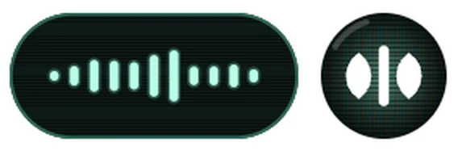
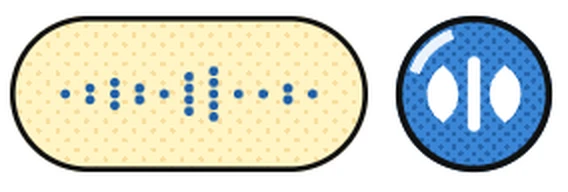
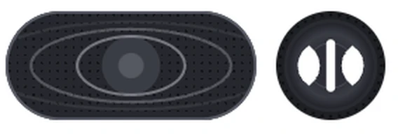
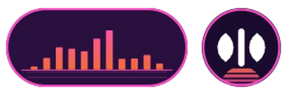
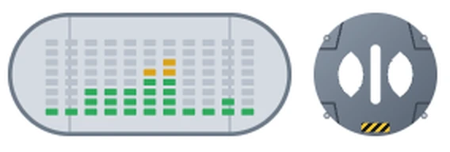
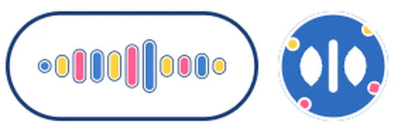
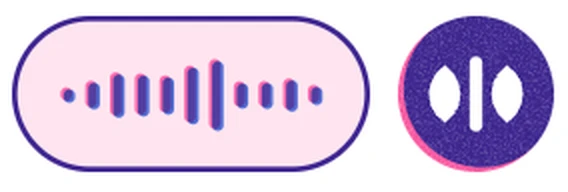
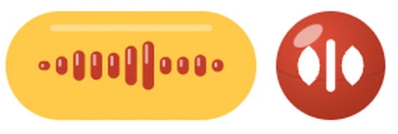
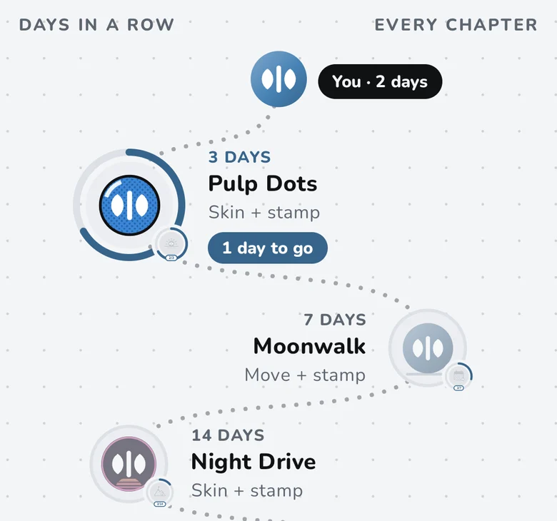
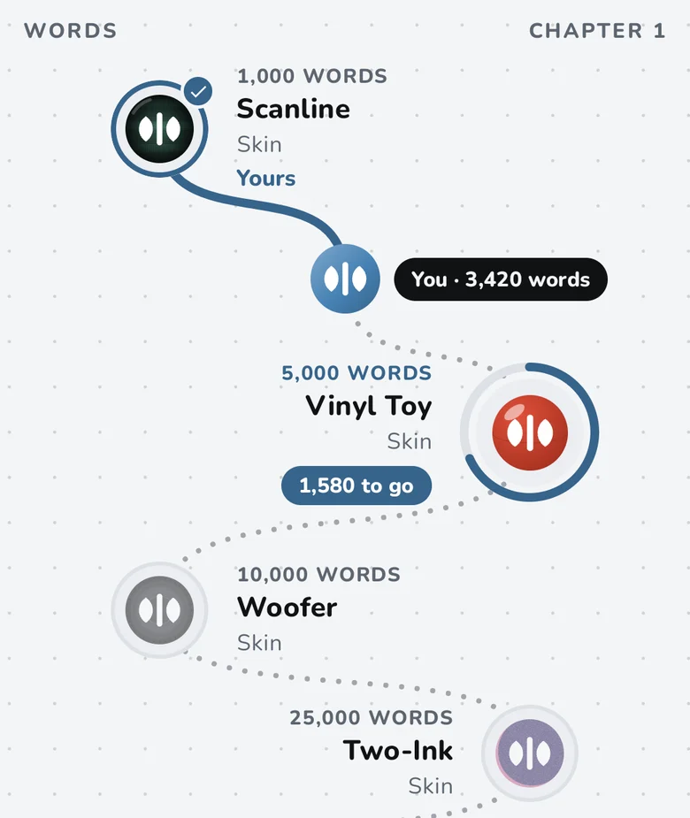

Everything it does
Talk normally. It handles the rest.
Talking
Tap or hold
Tap Blot to talk as long as you like, then tap ✓. Or hold it for a quick line and let go to send. Slide onto ✕ to cancel.
Any app
Blot floats next to the keyboard you already use: chats, email, notes, your browser.
Typed in, or copied
With Accessibility on, the text goes straight into the box. Without it, it is copied for you to paste.
Cleanup, as it goes
Real spoken lines and what KisuKisu typed.
“um I'm running fifteen minutes late uh can we push the call to two I mean three pm”
I'm running 15 minutes late, can we push the call to 3 pm?
“send it to mark scratch that send it to john”
Send it to John.
“the door code is four four two one”
The door code is 4421.
“her name is spelled k a y l a”
Her name is spelled Kayla.
Edit by voice
Change your mind out loud, at the end of what you said.
“pick up milk and bread on the way home change milk to oat milk”
Pick up oat milk and bread on the way home.
“meet at the cafe at noon undo that meet at the library at one”
Meet at the library at one.
“first milk second eggs third bread”
1. Milk
2. Eggs
3. Bread
“passport charger and socks make this a list swap the first two”
1. Charger
2. Passport
3. Socks
Your words
Learns your words
Fix a misheard word once and it is spelled right after that.
Snippets
Say a short phrase like “my address” and your saved text types itself.
Private and offline
Speech and cleanup run on your phone. No account, no ads, no analytics. Airplane mode works.
Make Blot yours
Free skins, voices and moves you earn just by talking: try a feature, build a streak, pass a word count. A skin dresses the floating bubble and the Blot at the top of Home; the app keeps your accent colour.








Voices
What the bubble says while it works.
Your journey
Words, days in a row and the things you've tried, in chapters, with the next prize in sight. Streaks forgive a missed day: a freeze each week and a one-time repair.


And the small things
Blot lingers
After the keyboard closes, Blot stays a moment, then leaves. It steps out of the way in full-screen video, games and the camera.
A practice box
Try every feature on a safe screen. Nothing you say in it is saved.
On or off, per app
Turn Blot off where you don't want it, and keep it everywhere else.
Backup and restore
Save your settings, progress and dictionary to a file you choose. History is optional and the file can have a password.
Five accent colours
Steel blue, copper, sage, violet and rose, for highlights and the bubble.
Fits your phone
It picks speech and cleanup models that fit your phone's memory, about 275 MB to 780 MB.
Questions
Is everything free?
Yes. KisuKisu is free, and so are the skins, voices and moves. There is nothing to buy, and nothing you earn is ever taken away.
Do I have to learn commands?
No. Talk normally and the cleanup does the rest. The spoken edits below are there when you want them.
Does my progress leave my phone?
No. Your journey, streaks and rewards stay on the phone. Nothing is sent anywhere.
Can I turn Blot off in some apps?
Yes. Turn the bubble on or off for each app.
What does a backup contain?
Your settings, rewards progress, per-app choices and dictionary. Dictation history is optional and you choose it. You can add a password. The file goes where you save it, and KisuKisu never sends it anywhere.
How do I get KisuKisu?
KisuKisu is in closed testing on Google Play. Fill in the short form with the Google account you use in the Play Store. We add you, usually within a day, and you install it from Google Play.
Talk messy. Send it clean.
KisuKisu is in closed testing on Google Play. It's free. Android only for now.
- Fill in a short form with the Google account you use in the Play Store.
- We add you as a tester, usually within a day.
- Install KisuKisu from Google Play like any other app.